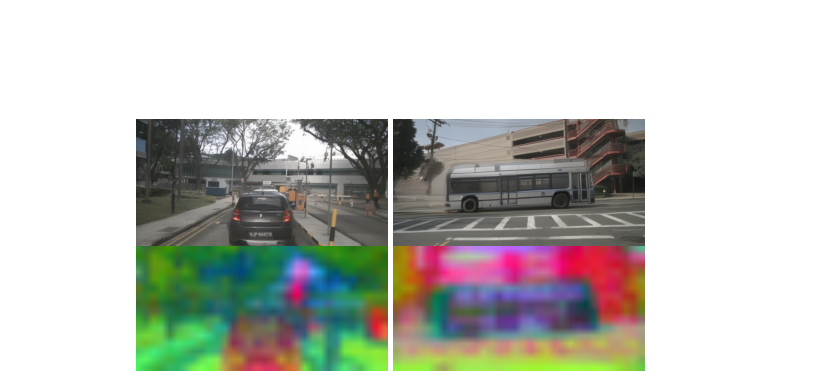
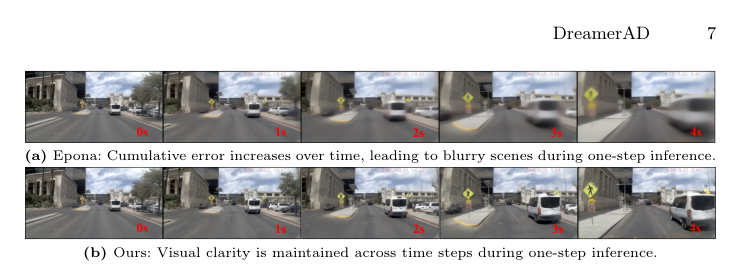
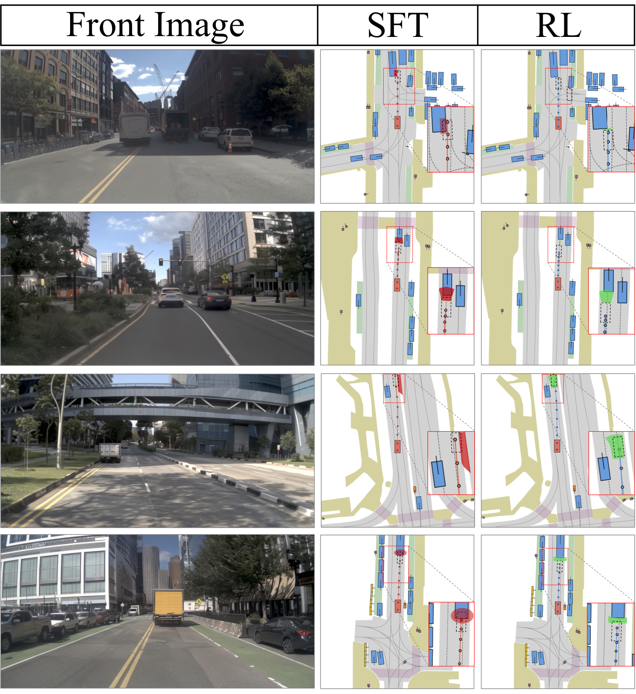

DreamerAD：通过自动驾驶潜在世界模型进行高效强化学习
简单摘要
强化学习（RL）被广泛认为是解决自动驾驶中分布偏移和因果混淆等长尾问题的有效方法。在真实世界数据上训练RL策略面临高昂的试错成本和不可接受的安全风险。基于视频生成的世界模型通过支持基于想象的策略学习提供了有前景的替代方案，但现有像素级扩散模型面临两个关键瓶颈：多步采样导致的严重推理延迟与RL交互需求不兼容，以及像素级目标优先于视觉保真度而忽视了驾驶安全至关重要的空间和动态理解。DreamerAD提出了一种在视频生成模型的潜在想象空间内完全执行RL的潜在世界模型框架。

核心创新
1. 提出DreamerAD框架，首次在视频扩散模型的潜在特征空间中构建世界模型并执行强化学习。
2. 通过shortcut forcing对自回归扩散世界模型进行微调，将世界模型采样从100步压缩至单步，实现低延迟RL训练。
3. 设计基于潜在特征条件的奖励模型，以每个动作对应的潜在特征为想象输入对每个动作步骤评分，提供密集的质量评估和信用分配。
4. 提出基于高斯词汇采样的GRPO优化方法，从轨迹词汇的邻域中基于高斯分布选择候选轨迹，实现更有效的策略探索。
5. 在NavSim v2闭环基准上达到87.7 EPDMS，建立新的最优性能记录。
技术细节
第二个组件使用从预定义的高质量词汇中采样的轨迹来优化策略。我们首先提出用于构建潜在空间预测表示的基础世界模型，然后描述所提出的 SF-WM，该模型在保持预测保真度的同时显着减少采样步骤。Epona 是一种基于流匹配的自回归扩散模型，它统一了视频生成和轨迹规划，从而实现了以动作控制为条件的未来视频预测。作者这样设计，是为了把这一节的输入、约束和输出关系讲清楚。
受捷径模型和扩散强迫的启发，SF-WM 引入了一种递归捷径强迫机制，将连续流过程离散化为由 2 的幂定义的多分辨率步骤空间。该模型通过步长嵌入以信号电平和请求的步长为条件。在修正流框架内，给定条件潜在特征 ，我们定义插值，其中 和 表示干净的数据潜在表示。这一步的作用，是把当前结果继续传给后面的模块或训练目标。

3 方法
第二个组件使用从预定义的高质量词汇中采样的轨迹来优化策略。我们首先提出用于构建潜在空间预测表示的基础世界模型，然后描述所提出的 SF-WM，该模型在保持预测保真度的同时显着减少采样步骤。Epona 是一种基于流匹配的自回归扩散模型，它统一了视频生成和轨迹规划，从而实现了以动作控制为条件的未来视频预测。作者这样设计，是为了把这一节的输入、约束和输出关系讲清楚。
受捷径模型和扩散强迫的启发，SF-WM 引入了一种递归捷径强迫机制，将连续流过程离散化为由 2 的幂定义的多分辨率步骤空间。该模型通过步长嵌入以信号电平和请求的步长为条件。在修正流框架内，给定条件潜在特征 ，我们定义插值，其中 和 表示干净的数据潜在表示。这一步的作用，是把当前结果继续传给后面的模块或训练目标。
3.1 全面的
DreamerAD 的整体流程由两个紧密耦合的组件组成。第一个组件完全在潜在空间内执行基于想象的轨迹评估。第二个组件使用从预定义的高质量词汇中采样的轨迹来优化策略。作者这样设计，是为了把这一节的输入、约束和输出关系讲清楚。
3.2 具有潜在奖励模型的世界模型
本节介绍我们的潜在世界建模框架，该框架旨在共同捕获未来的场景动态和轨迹演化。我们首先提出用于构建潜在空间预测表示的基础世界模型，然后描述所提出的 SF-WM，该模型在保持预测保真度的同时显着减少采样步骤。作者这样设计，是为了把这一节的输入、约束和输出关系讲清楚。
3.2.1 强制世界模型的捷径
围绕 3.2.1 强制世界模型的捷径，Epona 是一种基于流匹配的自回归扩散模型，它统一了视频生成和轨迹规划，从而实现了以动作控制为条件的未来视频预测。然后通过时间投影模块处理图像嵌入以获得。的最终帧用作流匹配生成器的紧凑条件，以预测下一帧潜在和未来轨迹。作者这样设计，是为了把这一节的输入、约束和输出关系讲清楚。
SF-WM 在一步推理下保持了敏锐的自回归预测质量，而原始模型存在严重的误差积累和模糊。这一步的作用，是把当前结果继续传给后面的模块或训练目标。

$$ Z = \text{DCAE-encoder}(O) \in \mathbb{R}^{B \times P \times L \times C}, \quad a = \text{MLP}(A) \in \mathbb{R}^{B \times P \times 3 \times D} $$
放在“方法”这一部分看，这条式子重点不是孤立地罗列符号，而是交代 Z 如何承接前面的输入并把结果交给后续步骤。
$$ x_t = t x_1 + (1-t)x_0,\quad v=\frac{dx_t}{dt}=x_1-x_0. $$
放在“方法”这一部分看，这条式子重点不是孤立地罗列符号，而是交代 x t 如何承接前面的输入并把结果交给后续步骤。
$$ d \sim 1/\mathcal{U}(\{1,2,4,8,\dots,K_{max}\}),\quad t \sim \mathcal{U}(\{0,d,2d,\dots,1-d\}). $$
放在“方法”这一部分看，这条式子重点不是孤立地罗列符号，而是交代 dots 如何承接前面的输入并把结果交给后续步骤。
$$ v_{target}= \begin{cases} x_1-x_0,& d=d_{min},\\ \text{sg}((v_1+v_2)/2),& \text{otherwise}. \end{cases} $$
放在“方法”这一部分看，这条式子是在把 v target 写成可直接计算的形式。它用分段规则来定义 v target 在不同条件下该取什么值，这样后续决策或推理过程就能按场景切换计算路径。
$$ \mathcal{L}(\theta)= \mathbb{E}_{x_0,x_1,t,d} [ \omega(t)\|\phi_\theta(x_t,t,d)-v_{target}\|^2 ], $$
这条式子是在定义一个可直接计算的中间量：右侧把相对位置、方向、权重或比例关系组合起来，左侧则把这个组合结果记成后续模块要反复使用的变量。
3.2.2 自回归密集奖励模型
为了缓解这个问题，我们构建了一个空间受限的探索词汇表。这确保奖励模型观察具有不同偏差水平的轨迹。过滤后的轨迹在 NavSim PDM 模拟器中进行评估，以获得八个奖励维度。作者这样设计，是为了把这一节的输入、约束和输出关系讲清楚。
$$ \Delta \theta = \min(|\theta_{\text{vocab}}-\theta_{\text{gt}}|,\,2\pi-|\theta_{\text{vocab}}-\theta_{\text{gt}}|) \le \theta_{\text{thresh}}. $$
放在“方法”这一部分看，它重点在定义或约束 Delta theta 这一项。这条式子是在定义一个可直接计算的中间量：右侧把相对位置、方向、权重或比例关系组合起来，左侧则把这个组合结果记成后续模块要反复使用的变量。
$$ r_{\text{pred}}^t=\text{RewardModel}(\text{traj}_{0:t},\text{his}_{-3:t}), $$
放在“方法”这一部分看，它重点在定义或约束 r pred t 这一项。这条式子是在定义一个可直接计算的中间量：右侧把相对位置、方向、权重或比例关系组合起来，左侧则把这个组合结果记成后续模块要反复使用的变量。
$$ \text{his}_{-3:t}=\text{his\_enc}(\text{concat}[z_{-3},z_{-2},z_{-1},z_0,\hat{z}_1,\dots,\hat{z}_t]). $$
放在“方法”这一部分看，它重点在定义或约束 his -3:t 这一项。这条式子是在定义一个可直接计算的中间量：右侧把相对位置、方向、权重或比例关系组合起来，左侧则把这个组合结果记成后续模块要反复使用的变量。
$$ C_{\text{dyn}}=\text{MLP}_{\text{traj}}(\text{traj}_{0:t})+\text{Emb}_{\text{step}}(t), $$
放在“方法”这一部分看，它重点在定义或约束 C dyn 这一项。这条式子是在定义一个可直接计算的中间量：右侧把相对位置、方向、权重或比例关系组合起来，左侧则把这个组合结果记成后续模块要反复使用的变量。
$$ Q_r=Q_{\text{base}}+C_{\text{dyn}}. $$
放在“方法”这一部分看，它重点在定义或约束 Q r 这一项。这条式子是在定义一个可直接计算的中间量：右侧把相对位置、方向、权重或比例关系组合起来，左侧则把这个组合结果记成后续模块要反复使用的变量。
3.3 通过词汇采样进行强化学习
围绕 3.3 通过词汇采样进行强化学习，我们设计了一种安全优先的奖励公式，将安全合规性和任务绩效信号分开，引入密集的时间奖励聚合以减少奖励稀疏性。对数融合机制确保安全违规主导奖励信号，因为碰撞事件将安全项推向零，从而推向负无穷大。为了减轻轨迹级评分中奖励的稀疏性，我们为时间信用分配引入了步骤级密集奖励。作者这样设计，是为了把这一节的输入、约束和输出关系讲清楚。
采用混合采样策略，根据 softmax 概率选择轨迹进行判别，并从高斯邻域中选择轨迹进行局部探索。采样的轨迹通过奖励模型进行评估以获得最终奖励。标准化组优势计算如下： 为了约束策略更新，使用重要性比。这一步的作用，是把当前结果继续传给后面的模块或训练目标。
实验结论
数据集 我们在 NavSim 数据集上评估 DreamerAD，该数据集基于 nuPlan 构建，提供来自 8 个摄像头的环视图像以及高质量 LiDAR 点云。我们的方法产生的 EPDMS 为 87.7，优于所有现有方法，并超出 Epona 基线 2.6 个点。
此外，我们的方法在关键安全指标方面显着优于 Epona，将无碰撞 (NC) 提高了 0.9，将碰撞时间 (TTC) 提高了 1.1，将可驾驶区域合规性 (DAC) 提高了 1.5。此外，我们在车道保持 (LK)、历史舒适度 (HC) 和扩展舒适度 (EC) 方面实现了实质性改进。这些核心安全指标的持续改进进一步验证了我们潜在的 IM 的有效性。
4.1 数据集
我们在 NavSim 数据集上评估 DreamerAD，该数据集基于 nuPlan 构建，提供来自 8 个摄像头的环视图像以及高质量 LiDAR 点云。该数据集分为 1,192 个训练场景和 136 个测试场景。
4.2 实施细节
我们利用 Epona 作为我们的基础世界模型，它是从头开始在 NuPlan 和 NuScenes 数据集上进行训练的。为了促进 NavSim 数据集的生成和规划，我们格式化 NavSim 数据并应用 AdamW 优化器，批量大小为 128，学习率为 ，权重衰减为。微调过程大约在一天内跨越 5 个时期。
4.3 主要结果
如表所示，我们的方法在 NAVSIM v2 闭环规划基准上实现了最先进的性能。此外，我们的方法在关键安全指标方面显着优于 Epona，将无碰撞 (NC) 提高了 0.9，将碰撞时间 (TTC) 提高了 1.1，将可驾驶区域合规性 (DAC) 提高了 1.5。这些核心安全指标的持续改进进一步验证了我们安全驾驶潜在想象力训练的有效性。
| c@0.5emc@1emc@1.2em|c@1emc@1emc@1.3emc@1.2emc@1.5em|>gray!25c Method | NC | DAC | DDC | TLC | EP | TTC | LK | HC | EC | EPDMS |
|---|---|---|---|---|---|---|---|---|---|---|
| TransFuser | 96.9 | 89.9 | 97.8 | 99.7 | 87.1 | 95.4 | 92.7 | 98.3 | 87.2 | 76.7 |
| hydramdp++ | 97.2 | 97.5 | 99.4 | 99.6 | 83.1 | 96.5 | 94.4 | 98.2 | 70.9 | 81.4 |
| DriveSuprim | 97.5 | 96.5 | 99.4 | 99.6 | 88.4 | 96.6 | 95.5 | 98.3 | 77.0 | 83.1 |
| ipad | 98.7 | 97.8 | 99.1 | 99.8 | 83.5 | 98.0 | 96.2 | 98.1 | 85.6 | 84.1 |
| ReCogDrive | 98.3 | 95.2 | 99.5 | 99.8 | 87.1 | 97.5 | 96.6 | 98.3 | 86.5 | 83.6 |
| DiffusionDrive | 98.2 | 95.9 | 99.4 | 99.8 | 87.5 | 97.3 | 96.8 | 98.3 | 87.7 | 84.5 |
| DriveVLA-W0 | 98.5 | 99.1 | 98.0 | 99.7 | 86.4 | 98.1 | 93.2 | 97.9 | 58.9 | 86.1 |
| World4Drive | 97.8 | 96.3 | 99.4 | 99.8 | 88.3 | 97.1 | 97.7 | 98.0 | 53.9 | 84.8 |
| WorldRFT | 97.8 | 96.5 | 99.5 | 99.8 | 88.5 | 97.0 | 97.4 | 98.1 | 69.1 | 86.7 |
4.4 消融研究
| ID | SF-WM | AD-RM | RL-SM | EPDMS | ||
|---|---|---|---|---|---|---|
| Vocab Sampling | WorldRFT | Flow-GRPO | ||||
| 1 | 85.1 | |||||
| 2 | 86.4 | |||||
| 3 | 87.0 | |||||
| 4 | 87.7 | |||||
| 5 | 86.6 | |||||
| 6 | 87.0 | |||||
4.4.1 快捷方式强制方法的影响
如表所示，ID 1 代表 Epona 基线。比较 ID 2（无快捷方式强制）和 ID 4（我们的完整方法）表明快捷方式强制 (SF) 显着提高了驾驶性能。此外，如表 所示，利用我们的 SF 方法进行单步推理，EPDMS 得分为 87.7，延迟超低，仅为 0.03 秒。
| Steps | Latency/Frame (s) | EPDMS |
|---|---|---|
| 16 | 0.40 | 87.7 |
| 4 | 0.10 | 87.8 |
| 1 | 0.03 | 87.7 |
4.4.2 自回归密集奖励模型的有效性
为了进一步评估其稳健性，我们在相同配置下使用不同比例的训练数据集来训练奖励模型。如表所示，使用 100% 的数据和仅使用 20% 的数据的结果显示差异很小。这表明我们的奖励模型和训练框架纯粹基于世界模型想象的未来状态，成功地学习了良好和不良驾驶行为之间的本质区别。
4.4.3 词汇采样方法的有效性
如表所示，ID 4、5 和 6 比较了三种不同的强化学习采样方法。相比之下，我们基于词汇的高斯采样方法可生成具有完整、平滑动态的高质量轨迹。它完美补充了我们的自回归密集奖励模型，并实现了最佳的整体性能。
4.5 定性结果
在本节中，我们在 NavSim 数据集上定性评估 DreamerAD。放大第 1、2 和 3 行的鸟瞰图 (BEV) 可以发现，监督微调 (SFT) 轨迹保持过高的速度，导致与前方静止车辆发生碰撞。此外，在第 4 行，SFT 模型与路缘发生碰撞。

理解评价
如果把这篇论文放回问题背景里看，它真正的价值在于：我们推出了 DreamerAD，这是第一个潜在世界模型框架，它通过将扩散采样从 100 步压缩到 1 步，实现自动驾驶的高效强化学习，在保持视觉可解释性的同时实现 80 倍的加速。这说明作者不是只补一个局部模块，而是在重新组织问题该怎样被解决。
最能支撑这个判断的，还是实验给出的证据：为了减轻轨迹级评分中奖励的稀疏性，我们为时间信用分配引入了阶梯级密集奖励。换句话说，这些设计并不只是概念上更完整，而是实实在在改变了最终结果。
当然，它离真正成熟的方案还有距离：当前方案的主要局限在于它仍然受到计算资源、输入质量或场景复杂度的约束，离真正大规模稳定部署还有距离。后续更值得继续推进的方向，是 这些核心安全指标的持续改进进一步验证了我们安全驾驶潜在想象力训练的有效性。